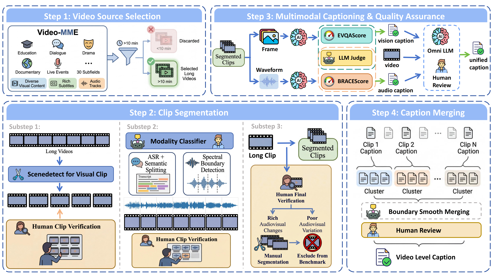
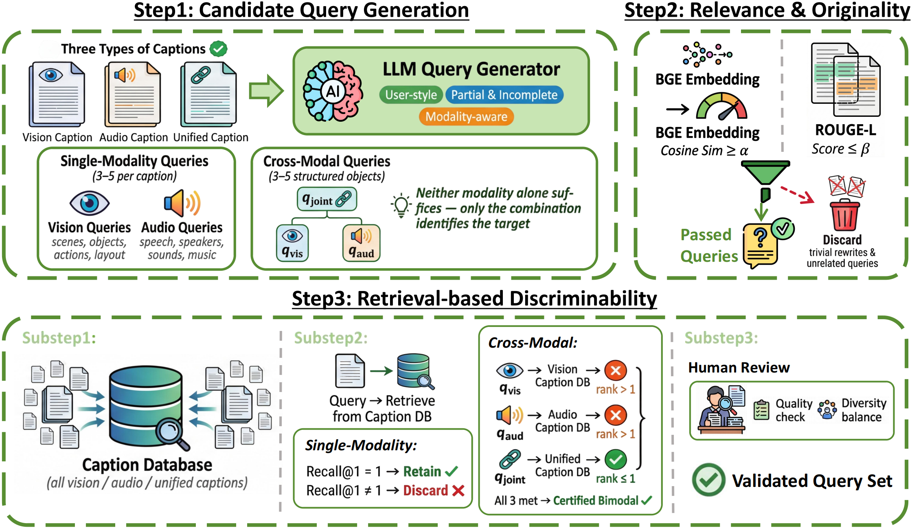
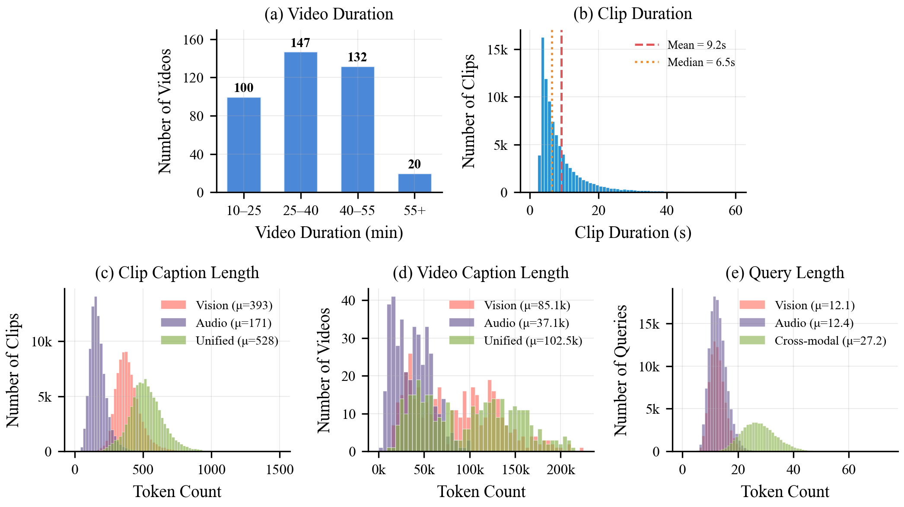
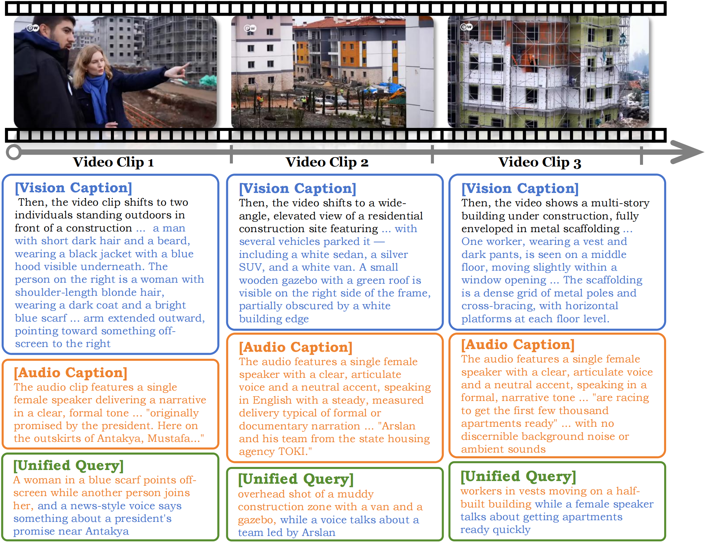
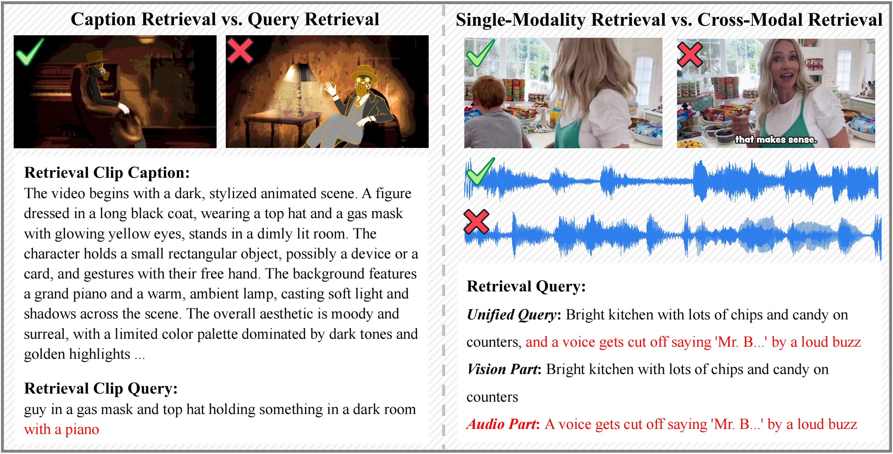

As video becomes increasingly central to information dissemination and multimodal large language models (MLLMs) continue to advance, evaluating video retrieval has become increasingly important. In realistic search scenarios, this requires matching short user queries to long-form content using both visual and auditory evidence. Yet existing retrieval benchmarks are still dominated by short clips, single modalities, and caption-based evaluation. We introduce FLARE, a full-modality long-video audiovisual retrieval benchmark with user-simulated queries. Built from 399 carefully screened Video-MME videos (10--60 min, 225.4 h) to ensure source quality and diversity, FLARE contains 87,697 clips annotated with vision, audio, and unified audiovisual captions, together with 274,933 user-style queries. Cross-modal queries are further filtered by a hard bimodal constraint, requiring retrieval to fail under either modality alone but succeed when both are combined. FLARE evaluates models under two regimes, caption-based and query-based retrieval, across vision, audio, and unified audiovisual settings. Experiments with 15 representative retrievers show that user-style queries substantially change model behavior, strong caption-based performance does not always transfer to query-based retrieval, and audio--language alignment remains a key bottleneck for unified audiovisual retrieval.
FLARE pushes long-video retrieval beyond short clips, single modalities, and caption-only evaluation.
399 carefully screened videos spanning 225.4 hours — every clip lives inside 10–60 min of long-context.
Each of 87,697 clips carries vision-only, audio-only, and unified audiovisual captions, all QA-filtered.
274,933 short, partial, search-style queries generated, relevance-filtered, and rank-1 retrieval-validated.
53,580 cross-modal queries require both modalities — vision-only fails, audio-only fails, joint succeeds.
Same gallery, two regimes: caption-based (information-rich) and query-based (realistic user search).
Contrastive and LLM-based retrievers, four directions (text↔clip, text↔video), three modality scopes.
FLARE is built bottom-up by a highly automated pipeline with targeted human review at every quality gate.




From the subset of clips that retain at least one unified query after hard-bimodal filtering, we enumerated all triplets of three temporally consecutive such clips and randomly drew two — they form Sample 0 and Sample 1 below. The full source videos and every JSONL artefact for these clips are released at the FLARE demo repository.
| Clip | Unified query (cross-modal, hard-bimodal) | Unified caption (clip-level) |
|---|---|---|
| Scene-067 | "A woman in a blue scarf points off-screen while another person joins her, and a news-style voice says something about a president's promise near Antakya" |
Show full unified captionThe video clip features two individuals standing outdoors in front of a construction site. The setting appears to be overcast, with muted lighting suggesting a cool or cloudy day. In the background, several multi-story buildings are visible — some are unfinished concrete structures with exposed window frames, while others are covered in scaffolding, indicating active construction. The ground in the foreground is uneven and muddy, with orange safety fencing partially visible, demarcating the construction zone. The two individuals are positioned side by side, facing slightly to the right of the frame. The person on the left is a man with short dark hair and a beard, wearing a black jacket with a blue hood visible underneath. The person on the right is a woman with shoulder-length blonde hair, wearing a dark coat and a bright blue scarf. She is actively gesturing with her left arm extended outward, pointing toward something off-screen to the right. The audio clip features a single female speaker delivering a narrative in a clear, formal tone, characteristic of a news report or documentary. The content of her speech is: "originally promised by the president. Here on the outskirts of Antakya, Mustafa…" The speech is abruptly cut off mid-sentence. Throughout the clip, there is a persistent low-frequency hum and a faint rhythmic clicking sound in the background. |
| Scene-068 | "overhead shot of a muddy construction zone with a van and a gazebo, while a voice talks about a team led by Arslan" |
Show full unified captionThe video presents a wide-angle, elevated view of a residential construction site featuring several multi-story apartment buildings in various stages of completion. The buildings are modern in design, with flat facades, rectangular windows, and a color scheme that includes white, gray, orange, and beige panels. Scaffolding is visible on one of the central buildings, indicating ongoing exterior work. In the foreground there is an unpaved, muddy area with newly planted young trees supported by wooden stakes. A paved walkway runs diagonally through the scene with several vehicles parked on it — a white sedan, a silver SUV, and a white van. A small wooden gazebo with a green roof is visible on the right side of the frame. Multiple construction workers wearing high-visibility orange and yellow vests are scattered throughout the site. The audio contains a single female English speaker with a clear, articulate voice, delivering a narrative or informational statement: "Arslan and his team from the state housing agency TOKI." The recording is of high quality, with no discernible background noise. |
| Scene-069 | "workers in vests moving on a half-built building while a female speaker talks about getting apartments ready quickly" |
Show full unified captionThe video shows a multi-story building under construction, enveloped in metal scaffolding that covers its entire exterior. The facade is partially finished: some sections are covered with white insulation panels studded with black fasteners, while others reveal orange or yellow insulation material beneath. The structure's concrete frame is visible in places where the cladding has not yet been applied. Several construction workers are visible on different levels of the scaffolding. The scaffolding is a dense grid of metal poles and cross-bracing, with horizontal platforms at each floor level. In the background, beyond the construction site, a residential area is visible, including houses with red-tiled roofs and trees. The audio features a single female speaker with a clear, articulate voice in a formal, narrative tone: "are racing to get the first few thousand apartments ready." The recording is of high quality, suggesting a controlled studio setting, with no other audible elements throughout the short clip. |
K759eXmaMTY.mp4
| Clip | Unified query (cross-modal, hard-bimodal) | Unified caption (clip-level) |
|---|---|---|
| Scene-040 | "rotating view of a realistic heart model with a perforated dome device while a narrator mentions bridged approval for special hearts" |
Show full unified captionThe video presents a close-up, computer-generated 3D model of a human heart with a mechanical device attached to its lower chamber. The mechanical device is a smooth, white, dome-shaped apparatus with a pattern of small, evenly spaced circular perforations across its surface. It is securely connected to the heart via a metallic, cylindrical interface. The video begins with a tight focus on the junction between the heart and the device, then the camera slowly pulls back and rotates around the object. The background is a plain, bright white. In the top-left corner the word "Carmat" is visible, and in the top-right corner a small circular logo appears. The audio features a single male speaker with a clear, mid-to-low pitched voice in a calm narrative tone: "special hearts in the world right now. But they're currently approved only as bridged." Throughout the clip there is a continuous, low-frequency electronic hum in the background. |
| Scene-041 | "A patient in a dotted hospital gown being helped by two doctors in a hospital room, with someone talking about temporary hearts in the background." |
Show full unified captionThe video opens with a bright, overexposed frame that quickly transitions into a clear, well-lit hospital setting — an intensive care unit, as indicated by the "ICU 78" sign visible on the wall. The "SynCardia" logo is visible in the top-left corner. Three main individuals are featured in the foreground: on the left, a male healthcare worker in light-blue scrubs holds a portable medical monitor; in the centre, a male patient in a light-green hospital gown with dark polka dots stands with support; on the right, a female healthcare worker in dark-green scrubs assists him. The audio contains a single male speaker with a clear, steady voice, discussing medical technology and specifically mentioning "transplant devices" and "temporary hearts" used to sustain patients. The narration is cut off mid-sentence; there is no background music or ambient noise. |
| Scene-042 | "Surgical team in blue gowns working intently while a man says the heart is ready, followed by a deep synth tone" |
Show full unified captionThe video captures a scene inside a brightly lit, modern operating room during what appears to be a complex surgical procedure. At the centre of the frame, a group of at least six medical professionals — surgeons and surgical assistants — are clustered closely around the patient. All personnel are dressed in full surgical attire: light-blue disposable gowns, caps, face masks, and gloves. Above the surgical team, two large circular surgical lights hang from the ceiling. To the right, a large monitor displays real-time vital signs. In the foreground a metal instrument tray is positioned on a table covered with a blue sterile drape, holding forceps, clamps, scissors and other metallic instruments. The audio begins with a single male speaker delivering a short, calm sentence: "The real donor heart becomes available." Immediately following the spoken sentence, the audio transitions to a sustained, low-pitched musical chord produced by a synthesizer or electronic organ that holds until the end of the clip. |
3uV8XZcIBbk.mp4
Recall@K (%) on FLARE. Bold marks the best within each modality group.
| Model | Text→Clip | Text→Video | Clip→Text | Video→Text | ||||||||
|---|---|---|---|---|---|---|---|---|---|---|---|---|
| R@1 | R@5 | R@10 | R@1 | R@5 | R@10 | R@1 | R@5 | R@10 | R@1 | R@5 | R@10 | |
| Vision | ||||||||||||
| CLIP ViT-B/32 | 7.98 | 18.92 | 25.38 | 24.06 | 44.36 | 53.38 | 8.54 | 19.75 | 26.28 | 17.29 | 34.08 | 43.10 |
| SigLIP2 Giant | 7.64 | 17.86 | 23.78 | 16.04 | 35.33 | 47.36 | 6.10 | 14.70 | 19.85 | 13.28 | 26.06 | 32.33 |
| MetaCLIP-2 Giant | 17.17 | 34.88 | 43.53 | 36.59 | 57.39 | 65.91 | 14.21 | 30.57 | 39.43 | 34.58 | 55.63 | 67.41 |
| VideoCLIP-XL-v2 | 47.28 | 70.88 | 78.52 | 56.39 | 75.93 | 80.95 | 41.67 | 66.37 | 74.92 | 48.62 | 71.17 | 80.45 |
| Qwen3-VL-Emb-8B | 80.27 | 93.99 | 96.75 | 98.49 | 99.74 | 99.74 | 77.61 | 92.94 | 96.14 | 95.48 | 100.0 | 100.0 |
| Audio | ||||||||||||
| MS-CLAP (2022) | 0.13 | 0.54 | 0.90 | 2.00 | 5.76 | 9.02 | 0.13 | 0.48 | 0.81 | 1.75 | 5.01 | 8.02 |
| MS-CLAP (2023) | 0.28 | 1.00 | 1.63 | 3.75 | 10.27 | 14.03 | 0.38 | 1.23 | 2.01 | 5.51 | 10.27 | 15.78 |
| LAION-CLAP | 0.24 | 0.87 | 1.43 | 2.50 | 8.02 | 12.28 | 0.27 | 0.93 | 1.51 | 2.50 | 8.27 | 12.03 |
| M2D-CLAP | 0.56 | 1.79 | 2.78 | 10.27 | 24.06 | 33.33 | 0.77 | 2.50 | 3.91 | 12.03 | 28.07 | 37.59 |
| GLAP | 0.53 | 1.60 | 2.46 | 5.76 | 15.03 | 23.55 | 0.72 | 1.98 | 2.99 | 8.27 | 24.31 | 32.33 |
| Aurola-7B | 73.02 | 83.10 | 86.37 | 89.72 | 98.24 | 100.0 | 74.15 | 84.59 | 87.87 | 83.95 | 97.99 | 99.74 |
| Vision + Audio | ||||||||||||
| ImageBind | 7.64 | 18.66 | 25.21 | 35.33 | 61.65 | 71.42 | 6.32 | 16.54 | 23.35 | 30.32 | 54.38 | 65.41 |
| LanguageBind | 2.70 | 7.15 | 10.23 | 23.80 | 48.37 | 58.14 | 0.83 | 2.76 | 4.42 | 14.78 | 31.57 | 39.09 |
| Perception AV Large | 26.48 | 42.32 | 49.05 | 49.12 | 74.68 | 81.95 | 26.06 | 46.37 | 55.13 | 40.10 | 66.91 | 75.18 |
| Wave-7B | 65.51 | 83.50 | 88.26 | 91.23 | 99.75 | 100.0 | 66.22 | 83.99 | 88.57 | 93.73 | 99.50 | 100.0 |
| Model | Text→Clip | Clip→Text | ||||
|---|---|---|---|---|---|---|
| R@1 | R@5 | R@10 | R@1 | R@5 | R@10 | |
| Vision | ||||||
| CLIP ViT-B/32 | 13.89 | 29.01 | 36.82 | 12.33 | 25.89 | 33.12 |
| SigLIP2 Giant | 33.98 | 56.92 | 65.17 | 22.90 | 43.59 | 52.75 |
| MetaCLIP-2 Giant | 33.09 | 57.18 | 66.20 | 21.46 | 41.51 | 51.06 |
| VideoCLIP-XL-v2 | 29.57 | 53.77 | 63.60 | 31.53 | 55.47 | 65.21 |
| Qwen3-VL-Emb-8B | 60.82 | 84.80 | 90.41 | 56.80 | 81.17 | 88.07 |
| Audio | ||||||
| MS-CLAP (2022) | 0.10 | 0.38 | 0.61 | 0.16 | 0.49 | 0.80 |
| MS-CLAP (2023) | 0.30 | 0.92 | 1.45 | 0.31 | 1.03 | 1.57 |
| LAION-CLAP | 0.19 | 0.62 | 1.01 | 0.18 | 0.60 | 0.97 |
| M2D-CLAP | 0.44 | 1.37 | 2.10 | 0.55 | 1.71 | 2.62 |
| GLAP | 0.63 | 1.56 | 2.25 | 0.59 | 1.43 | 2.05 |
| Aurola-7B | 33.31 | 51.40 | 58.54 | 34.99 | 53.48 | 61.01 |
| Vision + Audio | ||||||
| ImageBind | 6.35 | 16.59 | 23.09 | 7.07 | 18.79 | 26.28 |
| LanguageBind | 3.32 | 8.98 | 12.72 | 3.29 | 9.39 | 13.95 |
| Perception AV Large | 7.79 | 18.51 | 24.87 | 9.37 | 21.93 | 29.01 |
| Wave-7B | 42.63 | 67.63 | 76.26 | 47.69 | 71.66 | 79.78 |
FLARE exposes failure modes that single-modal, caption-only benchmarks cannot.

@inproceedings{flare2026,
title = {FLARE: Full-Modality Long-Video Audiovisual Retrieval Benchmark
with User-Simulated Queries},
author = {Anonymous},
booktitle = {Under review},
year = {2026},
note = {Code: https://github.com/YqjMartin/FLARE ;
Data: https://huggingface.co/datasets/YqjMartin/FLARE}
}